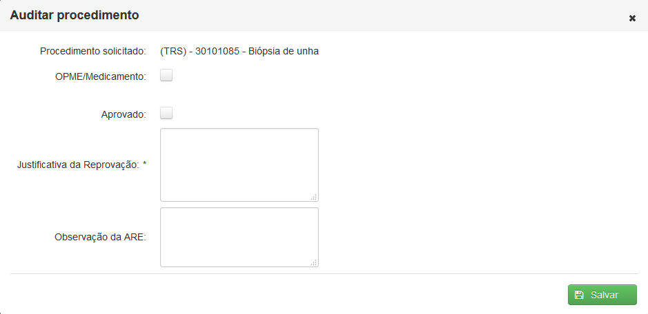

Clicando em 'Solic. Ressarcimento' surgirá uma tela contendo uma lista das solicitações de ressarcimento solicitadas e que devem ser analisadas.
É possível facilitar a busca utilizando os filtros Código e Nome Beneficiário, bastando apenas clicar e digitar a palavra a ser buscada.
O ícone( ) e a linha com o fundo em vermelho indicam que a solicitação é Não Eletiva.
) e a linha com o fundo em vermelho indicam que a solicitação é Não Eletiva.

Tela 'Solicitações de ressarcimento para auditoria'
Ao clicar no ícone Editar() aparecerá a tela da auditoria que dá acesso aos dados da solicitação e ao histórico do paciente.
Tela 'Auditoria Prospectiva de Ressarcimento'
Isento: Caso haja a necessidade o auditor pode marcar a opção isento e escolher a especificação.
Internação: Caso haja a necessidade o auditor pode marcar a opção internação e escolher o tipo da acomodação.
Observações do Auditor Prospectivo: Permite que o auditor deixe uma observação que pode ser visualizada na aba auditoria prospectiva do auditor retrospectivo.
Caso seja necessário o auditor pode incluir um novo procedimento clicando em ( )
)
Tela para adicionar procedimento do auditor prospectivo
Para adicionar o procedimento é necessário escolher uma tabela, então digitar o nome ou código do procedimento e escolher a especialidade(caso necessário).
Escolha a quantidade e preencha o valor do orçamento. Clique em() para adicionar o procedimento
Caso haja mais de um procedimento e especilidade iguais para auditoria o auditor pode selecionar tais procedimentos e clicar em ().
O botão () permite a auditoria de um procedimento individualmente e o botão ( ) permite remover um procedimento.
) permite remover um procedimento.

Janela para auditoria do procedimento
Caso a opção OPME/Medicamento seja marcada o preenchimento dos campos Descrição OPME/Medicamento, Valor OPME/Medicmento, Justificativa do OPME/Medicamento torna-se obrigatório.
Para reprovar um procedimento deve-se deixar a opção Aprovado desmarcada e preencher uma justificativa para a reprovação.
O campo Observação da ARE permite que o auditor faça uma observação que aparecerá na ARE.
Clique em() para finalizar a auditoria do item.
Depois que todos itens forem auditados clique em() para finalizar a auditoria
Caso a solicitação apresente alguma inconsistência o auditor poderá retorná-la para o atendente clicando em() e preenchendo o motivo da inconsistência.
Na aba 'Histórico' estarão disponíveis as antigas solicitações auditadas.

Aba Histórico
Clicando no botão () é possível visualizar o histórico das Solicitações anteriores contendo a Solicitação, Auditoria e GAB/ARE geradas da Solicitação escolhida.
Histórico das solicitações anteriores
Ao passar o mouse por cima do ícone() é possível visualizar a justificativa de uma Reprovação.
Janela de histórico

Janela de histórico

Janela de histórico
Na aba 'Dados da solicitação' estarão disponíveis todas as informações necessárias sobre o usuário para que o auditor prospectivo realize a análise da solicitação do ressarcimento.
Aba 'Dados da solicitação'